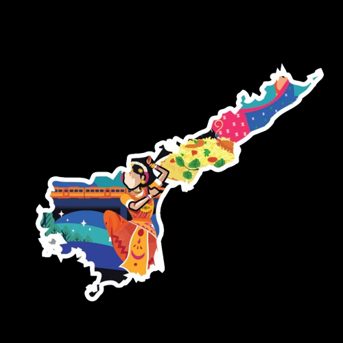

ANDHRA PRADESH

-
ANDHRA PRADESH is a state in the southern coastal region of India. It is the seventh-largest state with an area of 162,970 km2 (62,920 sq mi) and the tenth-most populous state with 49,577,103 inhabitants based on 2011 census data. It shares borders with Chhattisgarh, Odisha, Karnataka, Tamil Nadu, Telangana, and the Bay of Bengal. It has the second-longest coastline in India at about 974 km (605 mi).
-
After existence as Andhra State and unified Andhra Pradesh, the state took its present form on 2 June 2014, when the new state of Telangana was formed through bifurcation. Amaravati is the capital of the state, with the largest city being Visakhapatnam. Telugu, one of the classical languages of India used by the majority of people, is the first official language.
-
The Eastern Ghats are a major dividing line separating coastal plains and peneplains. The coastal plains are part of Coastal Andhra. These are mostly delta regions formed by the Krishna, Godavari, and Penna rivers. Peneplains are part of Rayalaseema. 62% of the population is engaged in agriculture and related activities. Rice is the state's major food crop and staple food. The state contributes 10% of total fish production and over 70% of shrimp production in India. Industry sectors such as food products, non-metallic minerals, textiles, and pharmaceuticals are the top employment providers.